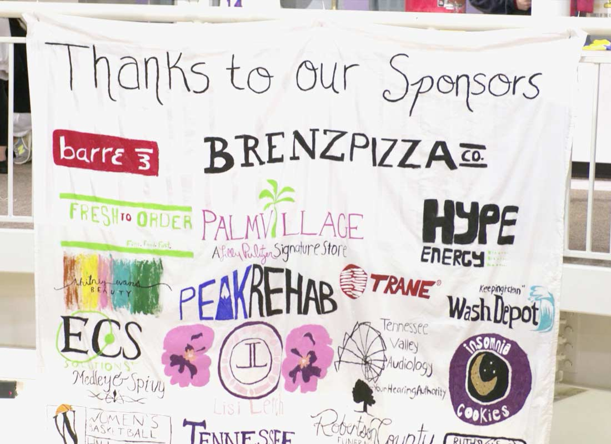
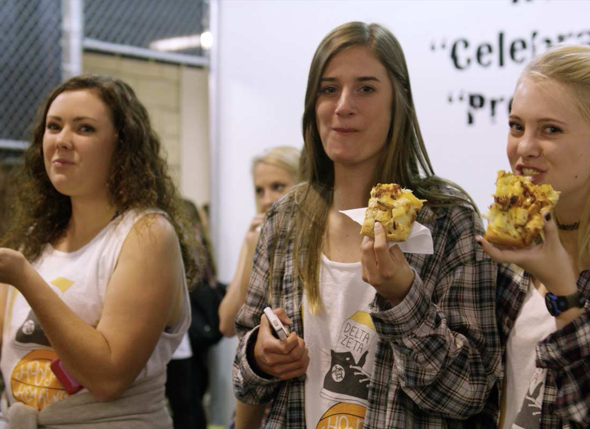

Hoops for Hearing | Video ▶
Held each fall at the Women's Basketball Hall of Fame, Delta Zeta invites other greeks to a basketball tournament to raise funds for the Tennessee School for the Deaf. Brenz Knoxville participated by donating pizza for the event. Delta Zeta also invited other greeks to join them for an evening at Brenz, where 20% of the sales went to Delta Zeta's fundraising.